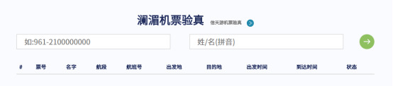
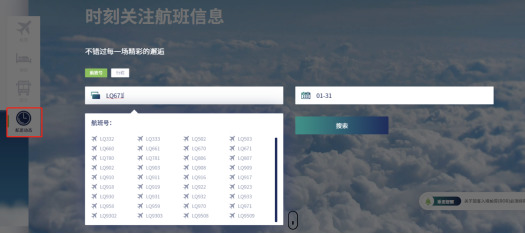
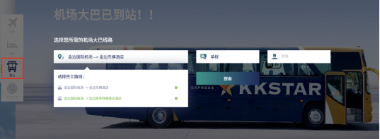

1. Q：为什么我的机票验真总是提示错误呢？


-
A：机票验真需要按照格式正确填写票号和姓名，如：961-2100000000，ZHANG/LI （按照行程单上姓名格式填写即可）
-

2. Q：我应该如何购买婴儿票？
-
A：我们官网目前暂不支持直接预定婴儿票，如有需要，您可以预定成人票之后，联系我们官网邮箱: lm-ec@lanmeiairlines.com ，我们会根据您的机票信息为您预定婴儿票。
3. Q：我怎么样才能申请到轮椅服务呢？
4. Q：我预订的机票有多少免费的托运行李额？
-
A：对于广州、香港和曼谷航线以及柬埔寨国内金边=暹粒航线，每位占座的旅客都享有25KG免费托运行李额；对于其他航线，每位占座的旅客都享有15KG免费托运行李额。
5. Q：我的行李超重了，如何购买逾重行李？
-
A：如果您是在我们官网预订的机票，您可以提前在我们官网预订逾重行李，记得在航班起飞12小时前购买哦。
6. Q：我预订的机票目的地选错了，可以更改吗？
-
A：非常抱歉，已经预订成功的机票，始发地与目的地是不允许修改的，请您在预订前一定要核对好相关信息。
7. Q：我想提前选座，可以办理网上值机吗？
-
A：我司暂不支持网上值机与选座，您可以在机场柜台值机的时候选座。
8. Q：我在官网预订了机票，已经成功付款了，但是为什么没有收到行程单呢？
-
A：为确保您出行顺利，请您将付款截图发送到我们邮箱，我们会为您确认之后给您发送行程单。（温馨提示：为避免收不到行程单，预订的机票的时候一定要正确填写联系邮箱地址哦）
9. Q：我怎么才能查到我的航班时刻有没有变动呢？
-
A: 打开我们官网首页，点击“航班动态”，选择您预定的航班号与出行日期，就可以轻松查到航班实时信息哦。
- 
10. Q：机场大巴怎么预定呢？
-
A：打开我们官网首页，点击“巴士”，即可选择您需要的机场大巴哦。
- 
11. Q：我的姓名太长，预定机票失败，收不到行程单怎么办？
-
A：如果您的姓名超过28个字符，预定机票之后，有可能会出票失败，您将收不到行程单。如遇到这种情况，请您发邮件到我们官网邮箱：lm-ec@lanmeiairlines.com，我们会为您出票。
12. Q：宠物可以跟我一起乘机吗？
-
A：因本公司部分飞机不具备装载活体动物的条件，目前本公司所执行的所有国内、国际（含地区）航班暂不接受小动物托运的业务。
13. Q：无成人陪伴儿童/青少年可以单独乘机吗？
-
A：1.基于安全方面的考虑，若没有18 周岁以上的成年乘客陪同，未满12 周岁的年幼乘客不得单独乘机。
2.年龄在 12 周岁至16 周岁之间的青少年可以单独乘机，但在机场办理值机手续时其父/母或监护人须在值机柜台签署一份免责声明。
14. Q：孕妇乘机有什么特殊规定吗？
-
A：1.怀孕27 周（含）以内的乘客，在机场值机柜台办理值机时，须签署一份澜湄航空免责声明，以免除澜湄航空由此而产生的一切责任。
2.孕期在28 周（含）至34 周（含）之间的乘客，须出具一份医生开具的适合飞行的证明。出具一份医生开具的医学证明，须说明怀孕周数，且该证明的开具日期距起飞日期不得超过30 日（入境和出境航班皆适用）。在机场值机柜台办理值机时，须签署一份澜湄航空免责声明，以免澜湄航空由此而产生的一切责任。
3.怀孕35 周（含）以上的乘客谢绝乘坐澜湄航空的航班。
16. Q：在澜湄官网购买机票或者其他产品，如何付款呢？
-
A：我们官网目前支持三种支付方式：支付宝，银联卡和PayPal。您也可以通过PayPal使用您的信用卡，Master卡和Visa卡支付。
17. Q：如何预定机上餐食？
-
A：我们目前只支持在官网购买机票的乘客预购机上餐食，请于航班起飞前24小时预定噢。官网预购更优惠！
18. Q：我经常乘坐澜湄航空的航班，怎么样才能成为澜湄航空的会员呢？会员有什么权益吗？